دکتر مسعود گوهری منش
دانشیار گروه مهندسی مکانیک — دانشگاه تربت حیدریه
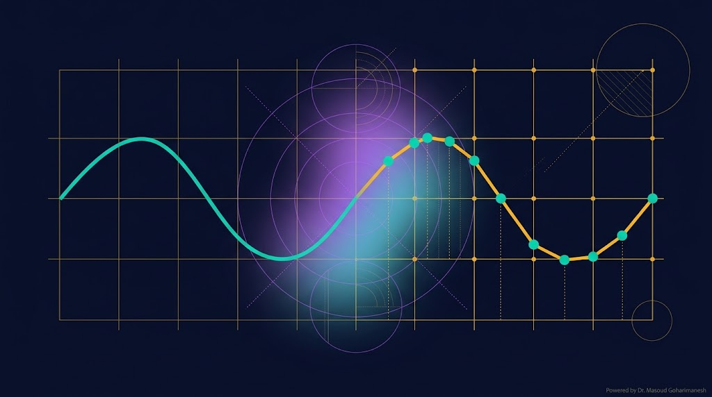
(Finite Difference & Runge-Kutta) — جلسه ۱۵
دکتر مسعود گوهری منش
دانشیار گروه مهندسی مکانیک — دانشگاه تربت حیدریه
در جلسات قبل، روشهای تحلیلی (LP و MS) را یاد گرفتیم. اما این روشها فقط برای مسائل ساده جواب میدهند. برای معادلات پیچیده غیرخطی یا هندسههای نامنظم، نیاز به روشهای عددی داریم که در کامپیوتر پیادهسازی میشوند.
بیشتر معادلات واقعی در فیزیک و مهندسی، حل تحلیلی ندارند یا حل آنها بسیار پیچیده است. روشهای عددی این مشکل را حل میکنند.
$y'' + \epsilon(y^2-1)y' + y = 0$
van der Pol — حل تحلیلی دقیق ندارد
تیر با مقطع متغیر، سطوح منحنی
FD و FEM اینها را حل میکنند
نانو انبرک، CFD، سازهها
شبیهسازی کامپیوتری
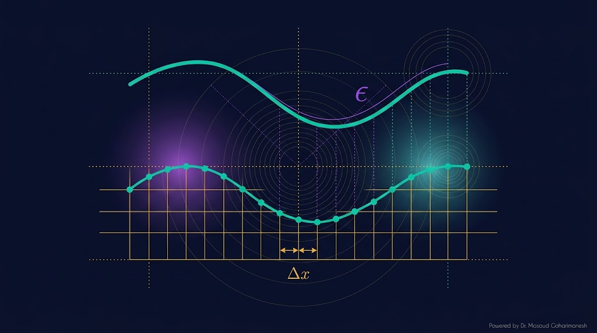
ایده اصلی روشهای عددی، تبدیل مسئله **پیوسته** به یک مسئله **گسسته** است. بهجای تابع $f(x)$ که در هر نقطه تعریف شده، مقادیر $f_i$ را فقط در **نقاط شبکه** $x_i$ محاسبه میکنیم.
مجموعه نقاط $x_0 < x_1 < \dots < x_N$
$h = x_{i+1} - x_i$
هرچه $h$ کوچکتر، دقت بالاتر
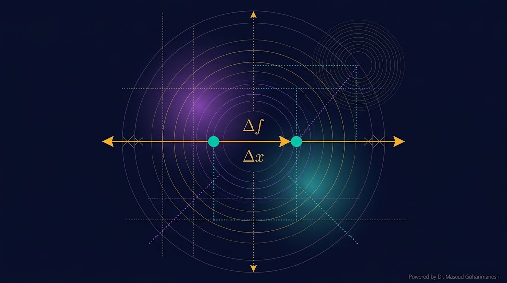
اولین و سادهترین تقریب مشتق، استفاده از **بسط تیلور** در نقطه بعدی است:
ساده و سریع. برای مسائل پارabolic مناسب است.
دقت مرتبه اول $O(h)$ — کمتر از تفاضل مرکزی.
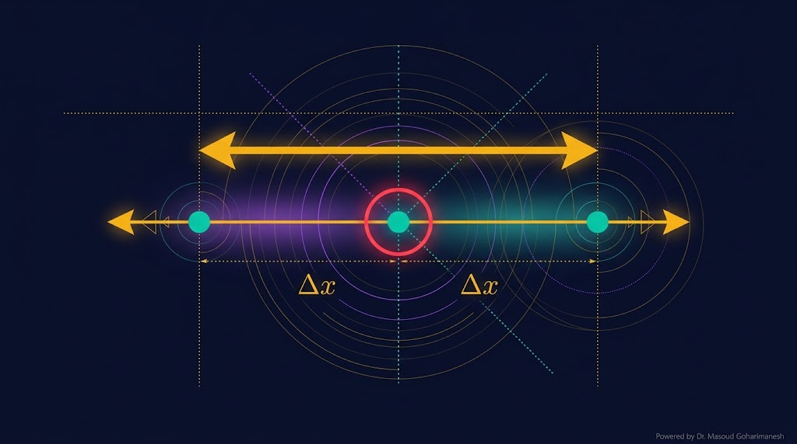
با ترکیب دو بسط تیلور (جلو و عقب)، جملات مرتبه $h^2$ حذف میشوند:
دقت مرتبه دوم — دقیقتر از forward
دقت مرتبه $O(h^2)$ — پرکاربردترین روش در FD.
نیاز به نقاط بیشتر در مرز (شرایط مرزی پیچیدهتر).
مشابه forward، اما با استفاده از نقطه قبلی:
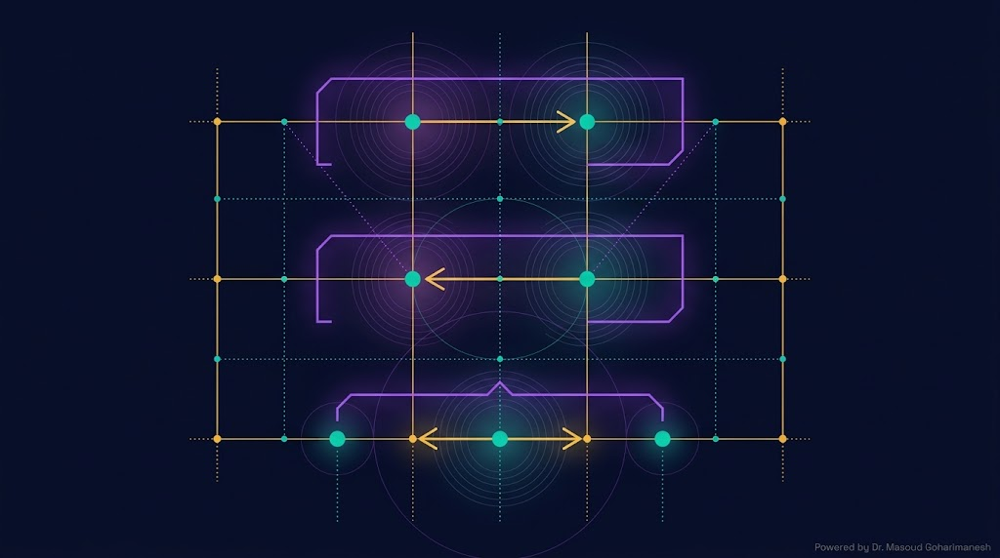
این استنسیل ۵ نقطهای، پایه حل معادله تیر اویلر-برنولی است.
تأثیر گام h و نوع تفاضل بر دقت را ببینید.
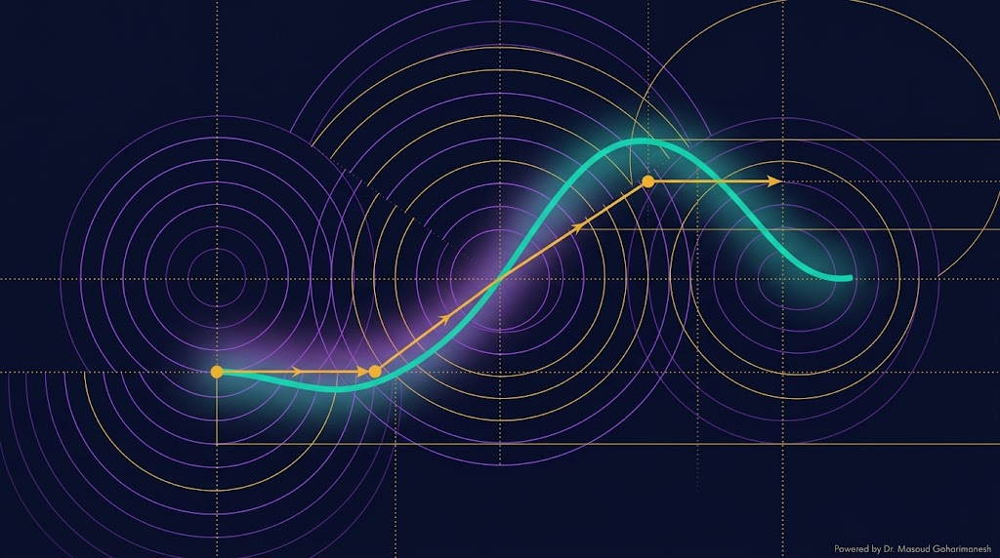
که $h = t_{n+1} - t_n$ گام زمانی است.
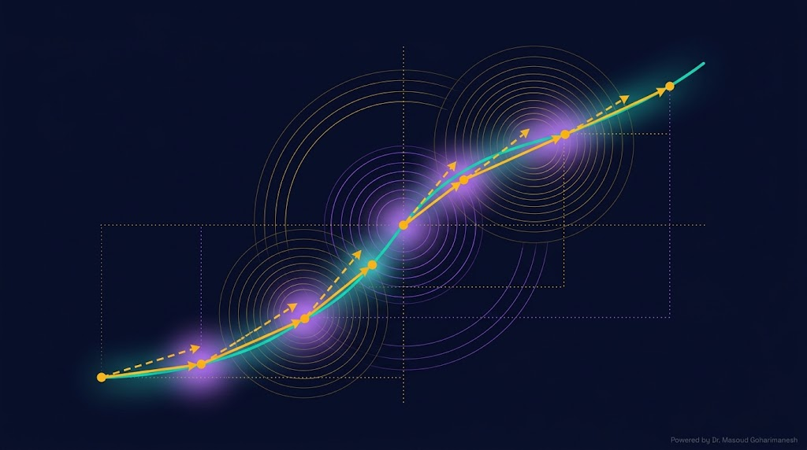
روش RK2 با **دو ارزیابی شیب** در هر گام، دقت را به مرتبه دوم میرساند:
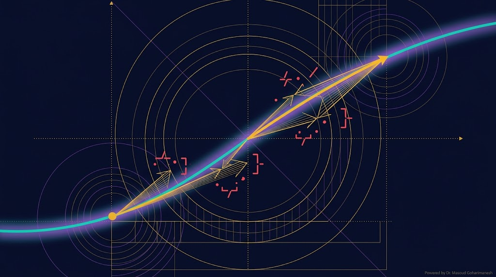
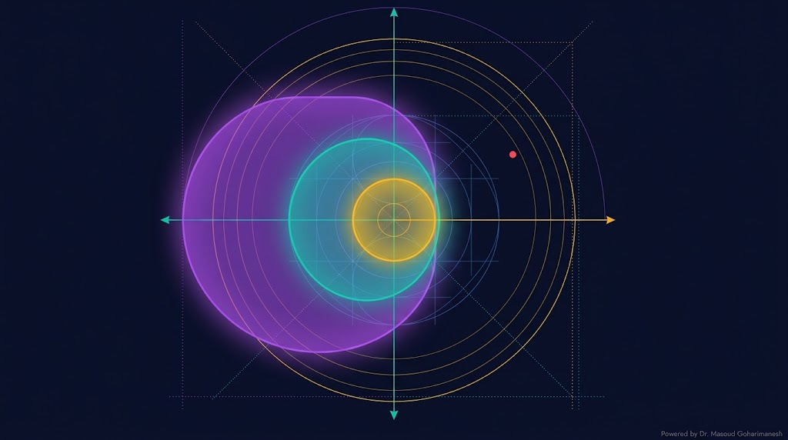
انتخاب گام زمانی $h$ نباید دلبخواه باشد. برای هر روش، یک منطقه پایداری وجود دارد.
ناحیه پایداری: دایرهای با شعاع ۱ در صفحه مختلط.
ناحیه بزرگتر (~2.8 برابر Euler).
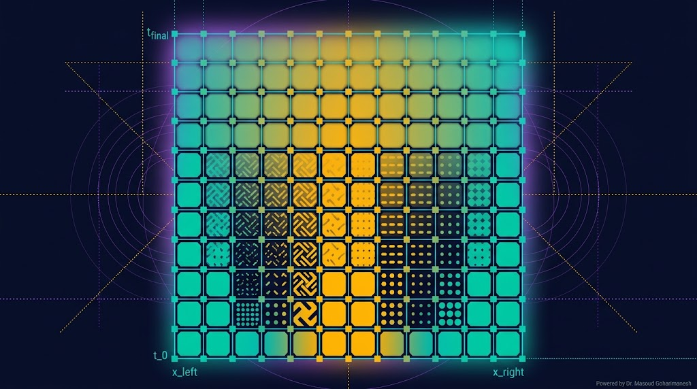
که $r = \alpha \Delta t / \Delta x^2$ عدد کورانت است.
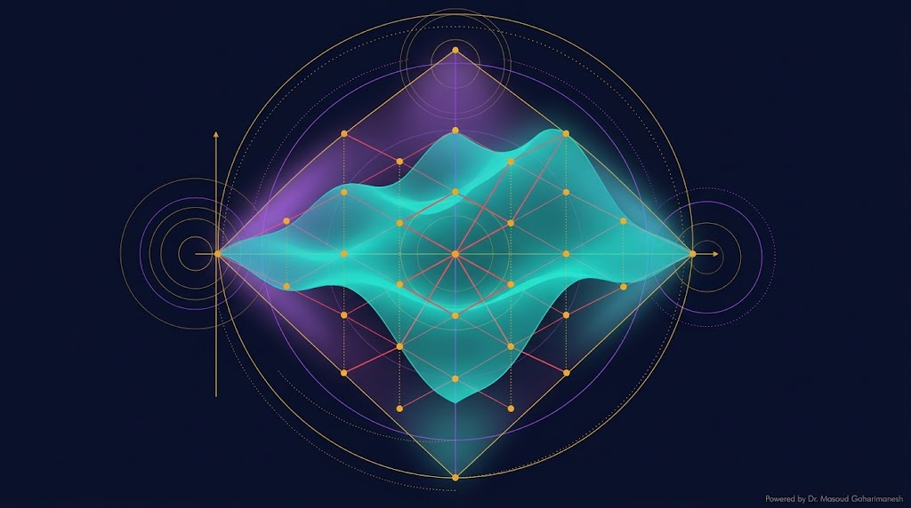
CTCS = Central Time, Central Space
که $C = c \Delta t / \Delta x$ عدد کورانت است.
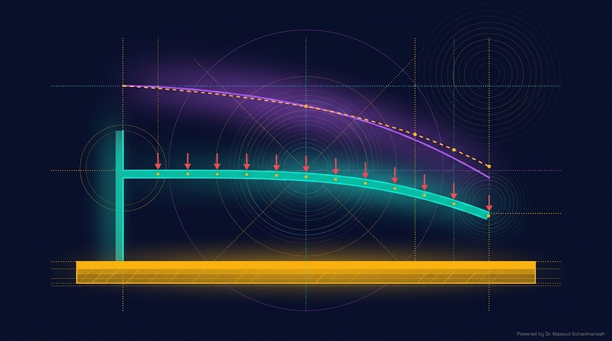
این یک سیستم غیرخطی از معادلات جبری است که با روشهای تکراری (Newton-Raphson) حل میشود.
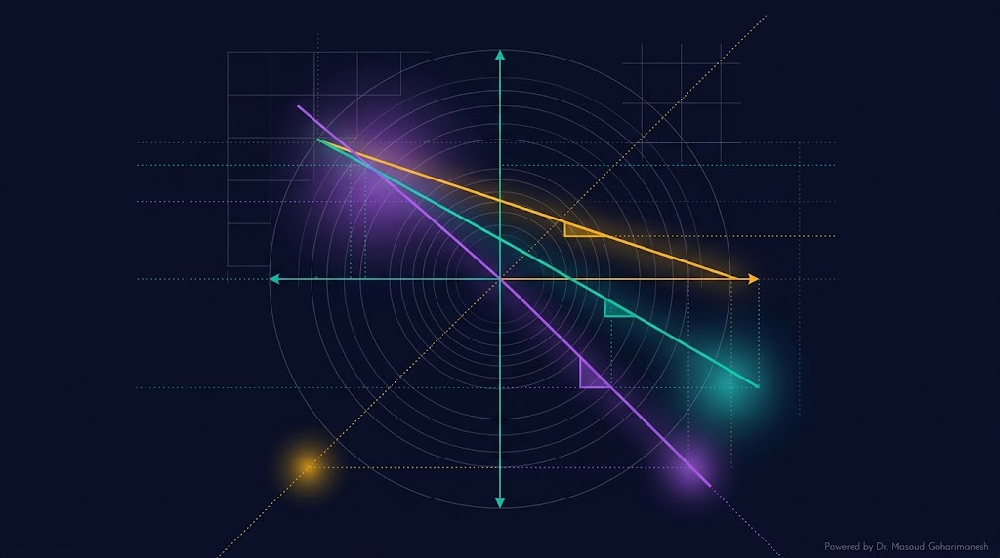
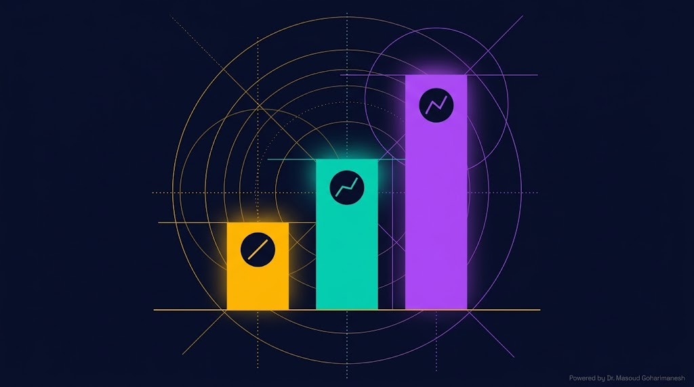
| روش | مرتبه دقت | هزینه محاسبه | کاربرد |
|---|---|---|---|
| Euler | $O(h)$ | بسیار کم | مسائل آموزشی |
| RK2 (Heun) | $O(h^2)$ | متوسط | مسائل متوسط |
| RK4 | $O(h^4)$ | بالا | استاندارد صنعتی |
| FD مرکزی | $O(h^2)$ | متوسط | PDE ها |
% === مقایسه Euler، RK2، RK4 برای ODE === clear; clc; close all; % معادله: y' = -2*y + sin(t), y(0) = 1 f = @(t, y) -2*y + sin(t); y0 = 1; t_end = 5; h = 0.2; t = 0:h:t_end; N = length(t); % حل تحلیلی (برای مقایسه) y_exact = @(t) 0.4*sin(t) - 0.2*cos(t) + 1.2*exp(-2*t); y_true = arrayfun(y_exact, t); % === Euler === y_euler = zeros(1, N); y_euler(1) = y0; for i = 1:N-1 y_euler(i+1) = y_euler(i) + h * f(t(i), y_euler(i)); end % === RK2 (Heun) === y_rk2 = zeros(1, N); y_rk2(1) = y0; for i = 1:N-1 k1 = f(t(i), y_rk2(i)); k2 = f(t(i)+h, y_rk2(i)+h*k1); y_rk2(i+1) = y_rk2(i) + (h/2)*(k1 + k2); end % === RK4 === y_rk4 = zeros(1, N); y_rk4(1) = y0; for i = 1:N-1 k1 = f(t(i), y_rk4(i)); k2 = f(t(i)+h/2, y_rk4(i)+h*k1/2); k3 = f(t(i)+h/2, y_rk4(i)+h*k2/2); k4 = f(t(i)+h, y_rk4(i)+h*k3); y_rk4(i+1) = y_rk4(i) + (h/6)*(k1 + 2*k2 + 2*k3 + k4); end % === رسم === figure('Color', 'w'); plot(t, y_true, 'k-', 'LineWidth', 2); hold on; plot(t, y_euler, 'o--', 'Color', '#ff4757', 'LineWidth', 1.5); plot(t, y_rk2, 's--', 'Color', '#ffb700', 'LineWidth', 1.5); plot(t, y_rk4, '^--', 'Color', '#00d4aa', 'LineWidth', 1.5); xlabel('t'); ylabel('y(t)'); legend('Exact', 'Euler', 'RK2', 'RK4'); title('مقایسه روشهای عددی'); grid on;
# === مقایسه Euler، RK2، RK4 === import numpy as np import matplotlib.pyplot as plt # معادله: y' = -2y + sin(t), y(0) = 1 def f(t, y): return -2 * y + np.sin(t) y0 = 1 t_end = 5 h = 0.2 t = np.arange(0, t_end + h, h) N = len(t) # حل دقیق y_exact = 0.4 * np.sin(t) - 0.2 * np.cos(t) + 1.2 * np.exp(-2 * t) # Euler y_euler = np.zeros(N); y_euler[0] = y0 for i in range(N - 1): y_euler[i + 1] = y_euler[i] + h * f(t[i], y_euler[i]) # RK2 (Heun) y_rk2 = np.zeros(N); y_rk2[0] = y0 for i in range(N - 1): k1 = f(t[i], y_rk2[i]) k2 = f(t[i] + h, y_rk2[i] + h * k1) y_rk2[i + 1] = y_rk2[i] + (h / 2) * (k1 + k2) # RK4 y_rk4 = np.zeros(N); y_rk4[0] = y0 for i in range(N - 1): k1 = f(t[i], y_rk4[i]) k2 = f(t[i] + h / 2, y_rk4[i] + h * k1 / 2) k3 = f(t[i] + h / 2, y_rk4[i] + h * k2 / 2) k4 = f(t[i] + h, y_rk4[i] + h * k3) y_rk4[i + 1] = y_rk4[i] + (h / 6) * (k1 + 2*k2 + 2*k3 + k4) plt.figure(figsize=(12, 6)) plt.plot(t, y_exact, 'k-', linewidth=2, label='Exact') plt.plot(t, y_euler, 'o--', color='#ff4757', linewidth=1.5, label='Euler') plt.plot(t, y_rk2, 's--', color='#ffb700', linewidth=1.5, label='RK2') plt.plot(t, y_rk4, '^--', color='#00d4aa', linewidth=1.5, label='RK4') plt.xlabel('t'); plt.ylabel('y(t)') plt.legend(); plt.grid(True, alpha=0.3) plt.title('Comparison of Numerical Methods') plt.savefig('num_methods.png', dpi=600, bbox_inches='tight') plt.show()
ارسال تمرینها:
m.goharimanesh@gmail.com
Subject الزامی:
[Advanced Engineering Mathematics] HW15 - نام و نام خانوادگی - شماره دانشجویی
حالا با ابزارهای عددی قدرتمند آشنا شدید! 🌟
استاندارد طلایی RK4
روشهای طیفی و FEM مقدماتی
دکتر مسعود گوهری منش
دانشیار گروه مهندسی مکانیک — دانشگاه تربت حیدریه
🇮🇷 با افتخار برای دانشجویان مکاترونیک 🇮🇷
تحلیل فون نویمان (von Neumann analysis) یک روش ریاضی برای بررسی پایداری روشهای عددی است. در این روش، جواب را بهصورت موج فوریه مینویسیم:
که $G$ ضریب تقویت است. شرط پایداری: $|G| \leq 1$.
CFL (Courant-Friedrichs-Lewy) نام دانشمندانی است که این شرط را در ۱۹۲۸ معرفی کردند:
مفهوم پایداری در ریاضیات عددی، مشابه مفهوم پایداری در جامعهشناسی و اقتصاد است:
همانگونه که در حل عددی باید گام زمانی مناسب انتخاب کنیم، در مدیریت اجتماعی نیز باید سرعت تغییرات را متناسب با ظرفیت سیستم تنظیم کنیم.